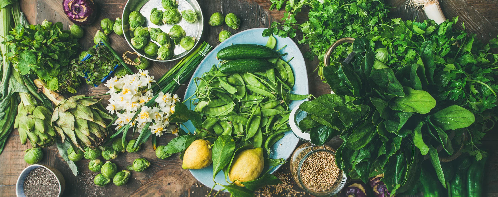

RECIPE FINDER
Recipe Finder
Previous Recipes
ENTER YOUR INGREDIENTS

×
No results found - please try entering some new ingredients
Search
RECIPE HISTORY
Clear recipe history
⭐ Favorite Recipes
Show Favorites